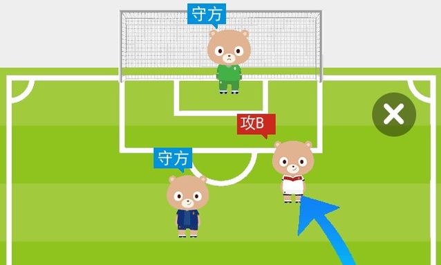

世界杯将全世界引入看球模式，大量的"伪球迷"们纷纷浮出水面。如何判断一个球迷是否伪球迷呢？如果不知道解说员挂在嘴边的"越位"是什么意思，基本可以算伪球迷了。这一深刻影响现代足球的规则描述起来非常复杂，文字、图片都难以解释清楚，普通人还真难看懂。手机百度移动搜索监测到"越位"这个词的搜索次数正在飙升，做了一个新功能，用户只需在手机百度搜索"越位"，就会直接弹出一个示意动画，让用户更加形象直观地了解究竟什么是越位，再也不怕"伪球迷"的身份被识破了。 → ワールドカップは全世界をサッカー観戦モードに巻き込み、多くの「にわかファン」たちが続々と浮上している。ファンがにわかかどうかをどう判断するか？解説者が口にする「オフサイド」の意味を知らなければ、基本的ににわかファンと見なせる。現代サッカーに深く影響するこのルールは説明するのが非常に複雑で、文字や画像では説明しきれず、普通の人にはなかなか理解できない。モバイル百度のモバイル検索は「オフサイド」という言葉の検索回数が急上昇していることを察知し、新機能を実装した。ユーザーはモバイル百度で「オフサイド」を検索するだけで、説明アニメーションが表示され、ユーザーはオフサイドとは何かをより直感的に理解でき、「にわかファン」の正体がバレる心配ももうない。
"特型搜索"解放伪球迷，傻瓜搜索 → 「特型搜索」がにわかファンを解放、カンタン検索
这一特型搜索，动画展示并不是新鲜事儿。在2011年圣诞节期间，在百度PC端搜索圣诞节便会出现圣诞老人相关动画，但这种"彩蛋"之前更多存在于PC端，且多是在节假期被作为一种好玩儿的乐趣，而不是与用户需求本身关联来解决用户问题。 → この特型搜索について、アニメーション表示自体は目新しいものではない。2011年のクリスマス期間中、百度PC版で「クリスマス」を検索するとサンタクロース関連のアニメーションが表示された。しかし、この種の「イースターエッグ」は従来はPC版に多く存在し、主に祝日に娯楽として楽しまれるものであり、ユーザーのニーズ自体に関連付けてユーザーの問題を解決するものではなかった。
手机百度"越位"特型搜索则是第一次将搜索结果与动画效果结合起来。让移动搜索进入傻瓜模式，不用选择不用点击，搜索即可看结果。 → モバイル百度の「オフサイド」特型搜索は、検索結果とアニメーション効果を初めて組み合わせたものだ。モバイル検索をカンタンモードにし、選択もクリックも不要で、検索するだけで結果を見られる。
此次手机百度推出特型搜索，是本届世界杯的特性所决定的。本届世界杯的比赛时间多是在半夜活或凌晨，且不支持第三方网络直播，因此人们更多是用电视看球，用手机搜索相关内容。手机百度用户数已超过5亿，月活跃在一年前破亿，占据中国移动搜索市场份额近80%，手机百度的"越位"特型搜索无疑是对足球的科普。 → 今回モバイル百度が特型搜索を投入したのは、今大会のワールドカップの特性によるものだ。今大会の試合時間は深夜または早朝が多く、また第三者のネット中継にも対応していないため、人々はテレビで観戦し、携帯で関連内容を検索することが多い。モバイル百度のユーザー数は5億を超え、月間アクティブユーザーは1年前に1億を突破し、中国のモバイル検索市場シェアの約80%を占めている。モバイル百度の「オフサイド」特型搜索は間違いなくサッカーの知識普及である。
特型搜索对搜索结果精准性要求高 → 特型搜索は検索結果の精度への要求が高い
手机百度此次推出的动画特型搜索十分值得移动搜索借鉴——Google并没有这样的功能。最原始的移动搜索结果是文字+超链接，后期开始出现搜索结果直达，用户在搜索结果页可以填写表单，可以玩儿游戏，可以看天气，可以用计算器等等。百度框计算更是将直达搜索发挥到淋漓尽致。 → モバイル百度が今回投入したアニメーション特型搜索は、モバイル検索が大いに参考にすべきものである——Googleにはこのような機能はない。最も初期のモバイル検索結果はテキスト+ハイパーリンクだったが、その後、検索結果の直接表示（リッチリザルト）が登場し始め、ユーザーは検索結果ページでフォームを入力したり、ゲームを遊んだり、天気を見たり、電卓を使ったりできるようになった。百度の框計算（ボックスコンピューティング）は、直接表示検索をさらに極限まで発揮させた。
在移动搜索上，直达搜索十分重要。用户在PC端进行搜索后可以点击多个搜索结果来选择最合适的，但移动端由于屏幕大小有限，网速限制则使得每一次点击成本变高。这时候精确地找到搜索结果就变得十分重要。 → モバイル検索において、直接表示検索は非常に重要である。ユーザーはPCでの検索では複数の検索結果をクリックして最適なものを選べるが、モバイル端末では画面サイズが限られ、通信速度の制約もあるため、毎回のクリックのコストが高くなる。このとき、検索結果を正確に見つけることが非常に重要になる。
如果搜索引擎可确保展示在第一屏的几条结果是用户需要的，已经很了不起；如果搜索引擎可以直接弹出一个特型结果，说明搜索引擎已经100%确定已理解用户需求。只有在足够强的用户需求理解情况下并且可以给出用户需要的信息和服务时，才可以做到这一点。 → 検索エンジンが最初の画面に表示される数件の結果がユーザーの求めるものであることを保証できれば、すでに素晴らしい。検索エンジンが特型結果を直接表示できれば、検索エンジンがユーザーのニーズを100%理解したと確信していることを意味する。十分に強いユーザーニーズ理解があり、かつユーザーが必要とする情報とサービスを提供できる場合にのみ、これを実現できる。
手机百度不断升级交互模式抢滩移动搜索 → モバイル百度は対話モードを絶えずアップグレードし、モバイル検索で先行
百度进入移动时代之后，在移动搜索上做了几件事情： → 百度はモバイル時代に入ってから、モバイル検索において以下のことを行ってきた。
1、优化输入方式： → 1. 入力方法の最適化：为了便于用户提交搜索需求，手机百度开发了领先的语音识别、LBS以及图像搜索技术，并衍伸出百度魔图等明星应用； → ユーザーが検索ニーズを送信しやすいように、モバイル百度は先進的な音声認識、LBS、画像検索技術を開発し、百度魔図などのスターアプリを生み出した；
2、优化输出结果： → 2. 出力結果の最適化：为了便于向手机用户展示搜索结果，百度通过转码技术让PC网页适配移动端，通过Light App平台让网页转化为更适合手机用户的轻应用，通过卡片式应用提供更适合手机的结果形式，这一次的"特型搜索"则又进一步，引入了直达的动画结果，未来可能还会延伸到语音、图像等多媒体的输出方式，例如用户搜索"变形金刚4预告片"手机百度便直接进入播放状态，减少用户点击。 → 携帯ユーザーに検索結果を表示しやすいように、百度はトランスコーディング技術でPCウェブページをモバイル端末に適応させ、Light Appプラットフォームでウェブページを携帯ユーザーにより適した軽量アプリに変換し、カード型アプリでモバイルにより適した結果形式を提供している。今回の「特型搜索」はさらに一歩進んで、直接表示のアニメーション結果を導入した。将来的には音声、画像などのマルチメディア出力方式にも広がる可能性がある。例えば、ユーザーが「トランスフォーマー4予告編」を検索すると、モバイル百度が直接再生状態に入り、ユーザーのクリックを減らす。
3、优化广告技术： → 3. 広告技術の最適化：通过大数据技术提升广告对接的精准性，同时减少页面广告展示量，在移动用户体验与商业诉求之间找到平衡。 → ビッグデータ技術により広告マッチングの精度を高め、同時にページの広告表示量を減らし、モバイルユーザー体験と商業的要件の間でバランスを見つける。
4、提供精准内容： → 4. 正確なコンテンツの提供：优化搜索频道，例如强化贴吧、小说和网址频道，弱化音乐频道，提供百度视频、百度地图、百度贴吧等垂直App，给用户提供更加精准的结果。 → 検索チャンネルを最適化し、例えば貼吧、小説、URLチャンネルを強化し、音楽チャンネルを弱め、百度動画、百度地図、百度貼吧などの垂直アプリを提供することで、ユーザーにより正確な結果を提供する。
手机百度移动搜索在优化输入/输出交互上一直不遗余力，以适应与PC搜索完全不同的移动搜索场景，从连接信息逐步转变到连接信息与服务。从连接人与信息，到高效连接人与服务的转变是手机百度也必须要做的事情，人们在移动端的搜索不再只是为了找到信息和答案，而是为了寻找服务，解决实际的生活需求，要实现这点必须用新的思维来做搜索交互，需求理解和结果匹配。手机百度此次推出的"越位"特型搜索体现了这一转变，接下来必然会被其他移动搜索模仿。 → モバイル百度のモバイル検索は、PC検索とはまったく異なるモバイル検索シーンに対応するため、入力/出力インタラクションの最適化に力を尽くしており、情報の接続から情報とサービスの接続へと徐々に転換している。人と情報の接続から、人とサービスを効率的に接続することへの転換は、モバイル百度にも必要なことである。人々のモバイル端末での検索は、もはや情報や答えを見つけるためだけでなく、サービスを探し、実際の生活のニーズを解決するためである。これを実現するには、新しい思考で検索インタラクション、ニーズ理解、結果マッチングを行う必要がある。モバイル百度が今回投入した「オフサイド」特型搜索はこの転換を体現しており、今後必ず他のモバイル検索に模倣されるだろう。
文章来源：人人都是产品经理 → 記事の出典：人人都是产品经理
点我分享笔记 → クリックしてノートを共有
<p style="font-size:14px;">笔记需要是本篇文章的内容扩展！</p><br> <p style="font-size:12px;"><a href="../tougao.html" target="_blank">文章投稿，可点击这里</a></p> <p style="font-size:14px;"><a href="./runoob-user-test-intro.html" target="_blank">注册邀请码获取方式</a></p> <h3 class="text-muted"><i class="fa fa-info-circle" aria-hidden="true"></i> 分享笔记前必须<a href=".." class="runoob-pop">登录</a>！</h3> <p><a href="./runoob-user-test-intro.html" target="_blank">注册邀请码获取方式</a></p> → <p style="font-size:14px;">ノートはこの記事の内容を拡張したものである必要があります！</p><br> <p style="font-size:12px;"><a href="../tougao.html" target="_blank">記事の投稿は、ここをクリックしてください</a></p> <p style="font-size:14px;"><a href="./runoob-user-test-intro.html" target="_blank">登録招待コードの取得方法</a></p> <h3 class="text-muted"><i class="fa fa-info-circle" aria-hidden="true"></i> ノートを共有する前に必須<a href=".." class="runoob-pop">ログイン</a>！</h3> <p><a href="./runoob-user-test-intro.html" target="_blank">登録招待コードの取得方法</a></p>